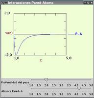

Precipitation and wetting
- Precipitation
- Choose a high temperature (>1.4) and a low density
(<0.2) using the slide rulers in the Main Panel
- In the Menu Simulation Type
choose gravity. Horizontal walls will
be automatically activated.
- Start the simulation from the Control
Menu and observe how particles are more or less
uniformly distributed. Activate in the Menu System Control the option
vertical density profile and the user
will observe a rather uniform distribution with a slightly
higher density as the height is lower.
- Lowering the temperature down to 0.6 one observes
the build up of clusters in liquid droplets that
precipitate. Notice the changes in the density profile
- If the temperature is lowered rapidly from a high value
to 0.2 the formation of crystalline aggregates that fall
down like "snow" will be observed.

- Wetting and dewetting
- Pause the program and from the menu Simulation type
activate the Option Lateral walls.
- The from the System Control menu choose
Wall-atom Interactions ( cf. upper
figure). Set the interaction range to 5 and well depth to 2.
- Start the simulation at a high temperature (1.6). Particles will
fill up the simulation box almost homogeneously.
- Lower the temperature down to 0.5. Observe la formation of a
concave meniscus due to the wetting of the container walls by the liquid.
- Pause the simulation. In the Interaction
wall-atom panel set the interaction range to 1.2 (repulsive
interactions). Continue the simulation (there is no need to restart
from the initial conditions).
Observe how the concave meniscus desappears. Lowering somewhat more
the temperature (0.4-0.3) now a convex meniscus starts to build up.